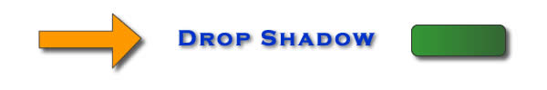
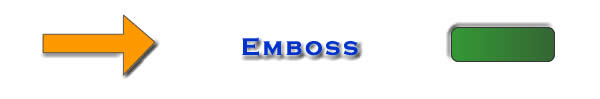
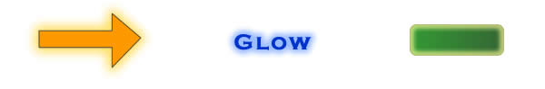
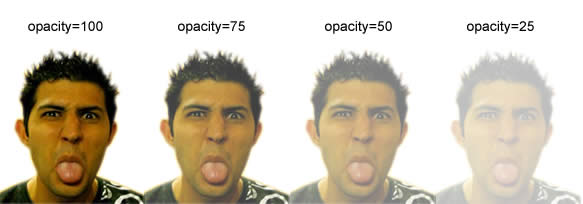
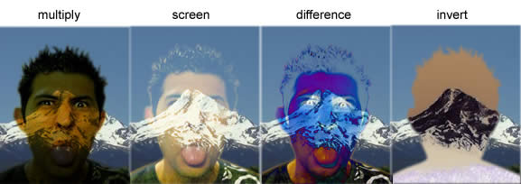
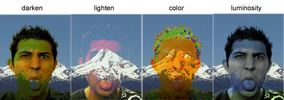

Layer Effects and Blending
Layer Effects
Most advanced graphics programs have a series of effects that can be applied to individual layers or objects on the page. Some of the most common layer effects include drop shadow, glow and bevel and emboss. There are also many other effects that are different in each application, so make sure you explore the effects in the graphics software you are using.
One of the great things about layer effects is that they are editable and removable. You can typically apply layer effects and then remove them or edit their settings. This is helpful, since it allows you to experiment with different effects and settings without permanently altering the image. Below are examples of some of the most common layer effects found in most programs.
Examples of the drop shadow effect being applied:

Examples of the bevel effect being applied:
Examples of the emboss effect being applied:

Examples of the glow effect being applied (the shape on the right uses inner glow instead of outer glow):

Opacity
Opacity is a measure of the amount of light that is able to pass through an object. With an opaque object such as a wall, no light is able to pass through. This is the opposite of a transparent object, such as a window, which allows light to pass through freely. Most graphics programs allow you to adjust the opacity of an object, determining how transparent or opaque the object is. A value of 100 typically defines an object that is completely opaque, whereas a value of 0 typically defines an object that is completely transparent.
By lowering the opacity of an object below 100, you will be able to see through the object and see objects that are behind it on the lower layers. Adjusting opacity is useful to create the effect of images blending together with each other blending in with the background. A low opacity will give an image an almost ghostlike appearance. The example below shows the same image with opacity values of 100, 75, 50 and 25.

Blending Properties
Blending properties are more advanced effects that enable you to determine how to layers blend together with each other. When you apply a blending property to an image, it alters the way in which that layer blends together with all of the layers underneath it. The multiply blending property, for example, takes the number value of the images color and multiplies it by the color of the image it is blending with to arrive at the result color, which is a darker image. Some of the effects are complicated to understand mathematically, so probably the best way to learn about blending properties is to just play around with them. Below are examples of some of the common blending properties:

